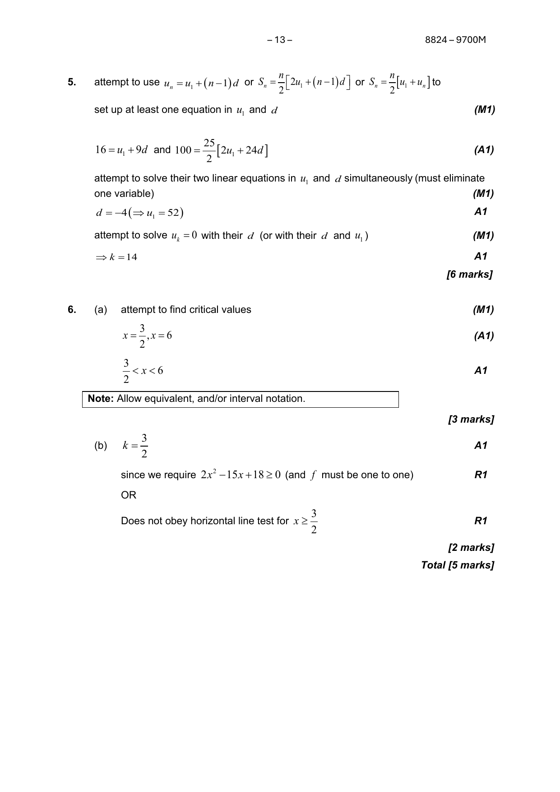
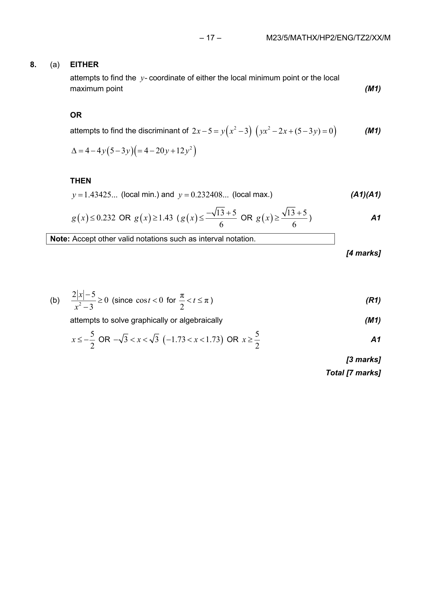
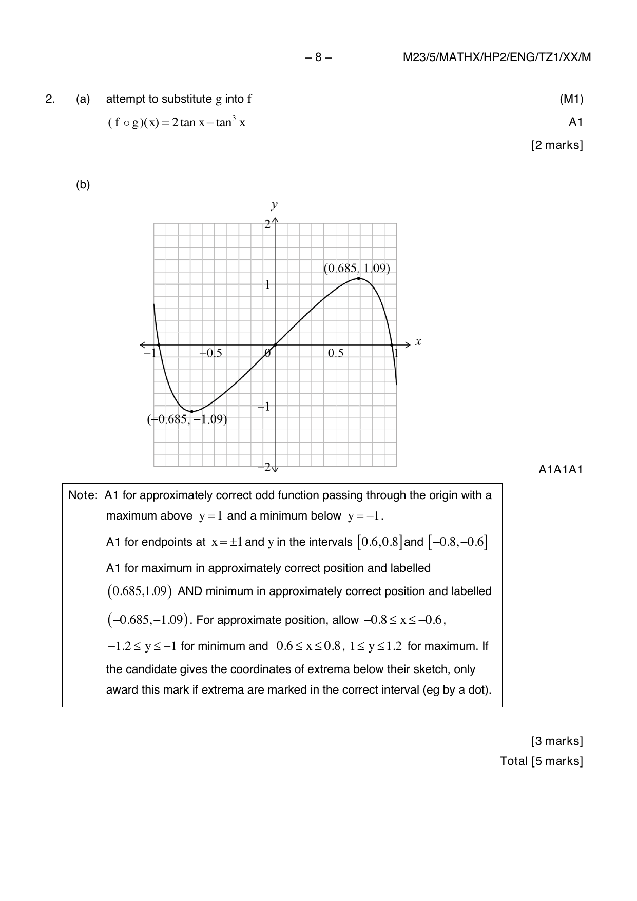
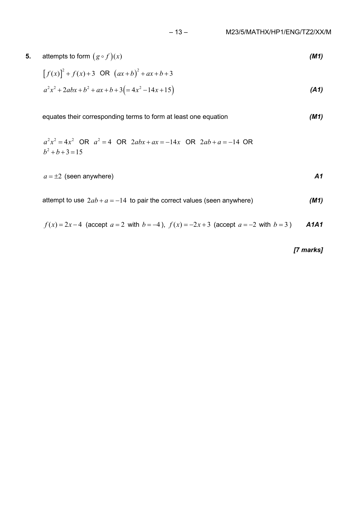
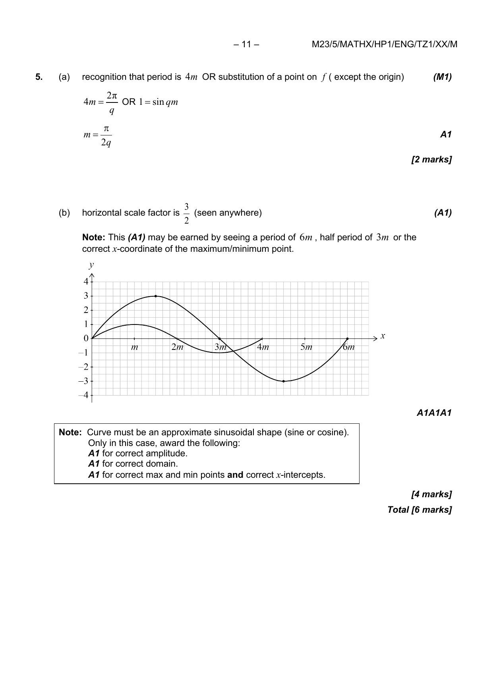
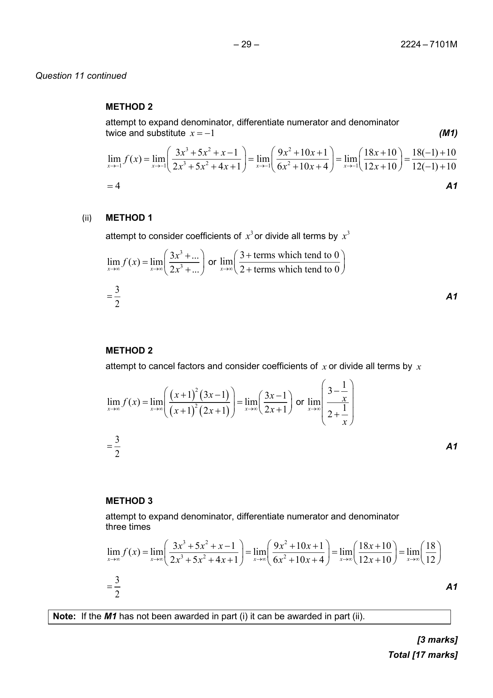
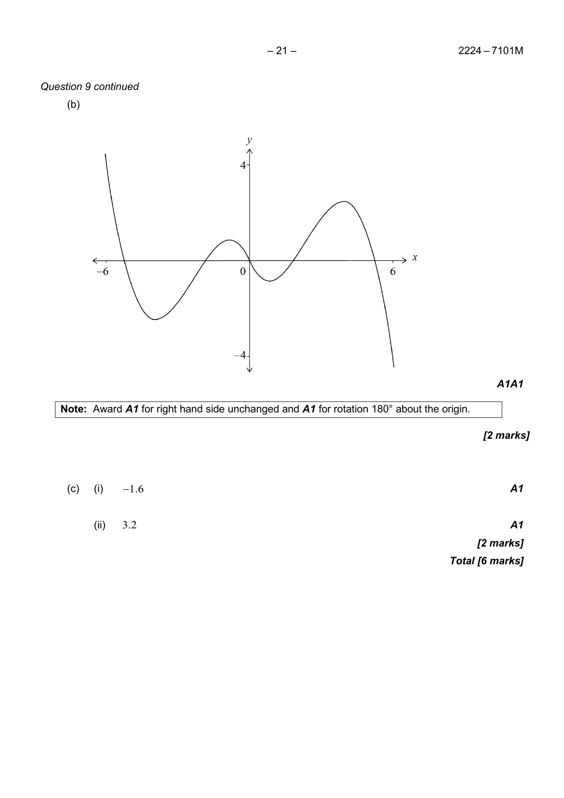
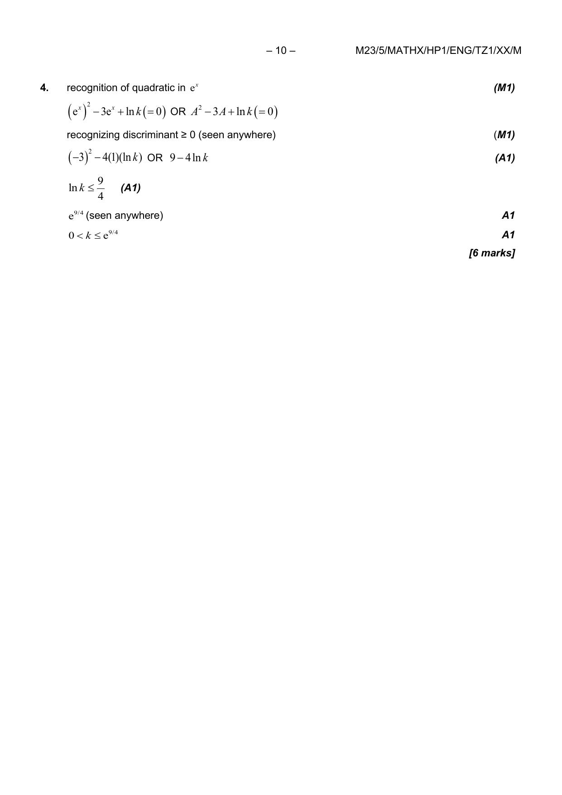
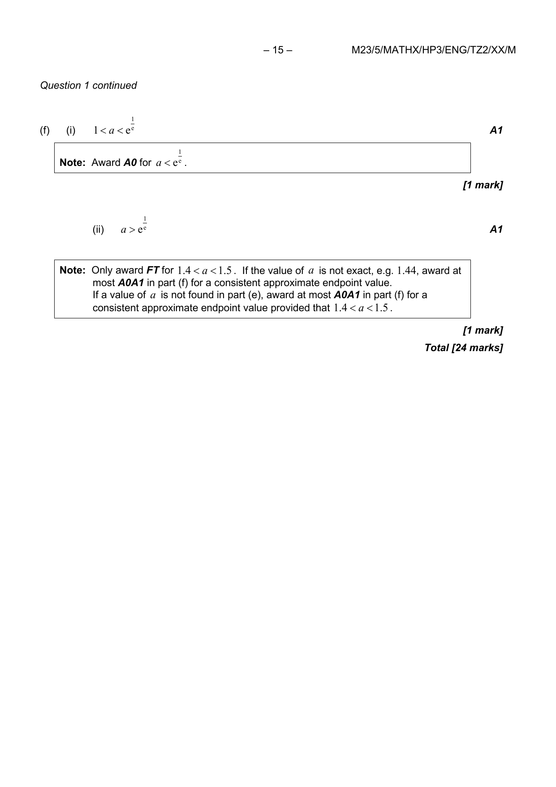

IB Math AA HL Test 2 Standard Answers
These answer pages are rendered from the original IB markscheme PDFs and rematched by exact session, timezone, paper, and question search.
Some items may still span more than one markscheme page. This pass fixes the question matching, but not yet multi-page cropping.
2024_November Paper 1 Question 6
Verified page match: markscheme page 13

2023_May TZ1 Paper 1 Question 1
Verified page match: markscheme page 7

2023_May TZ2 Paper 2 Question 8
Verified page match: markscheme page 17

2023_May TZ1 Paper 2 Question 2
Verified page match: markscheme page 8

2023_May TZ2 Paper 1 Question 2
Verified page match: markscheme page 9

2023_May TZ2 Paper 1 Question 5
Verified page match: markscheme page 13

2023_May TZ1 Paper 1 Question 5
Verified page match: markscheme page 11

2023_May TZ1 Paper 1 Question 8
Verified page match: markscheme page 16

2023_May TZ2 Paper 2 Question 10
Verified page match: markscheme page 21
2024_May TZ1 Paper 1 Question 11
Verified page match: markscheme page 29

2024_May TZ1 Paper 1 Question 10
Verified page match: markscheme page 26
2024_May TZ1 Paper 1 Question 9
Verified page match: markscheme page 21

2023_May TZ1 Paper 1 Question 4
Verified page match: markscheme page 10

2023_May TZ2 Paper 3 Question 1
Verified page match: markscheme page 15

2024_May TZ1 Paper 1 Question 2
Verified page match: markscheme page 8